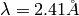

Table of Contents
HFIR powder reduction interface (HFIR-PDR-GUI) is a GUI to download, view and reduce data from HFIR’s powder diffractometers in SPICE format.
- Raw Detectors: Visualize the reading of detectors directly coming out of the raw data
- Plot N lines for N Pts.;
- Highlight (make it thicker) the Pt that is interested;
- New from Mantid: ReadRawSpiceSignal(Pts);
- Individual Detector: Visual the readings of one detector across an experiment
- Plot the counts of any individual detector;
- Able to change the X-axis from 2theta to arbitrary sample environment log;
- New from Mantid: ReadRawSpiceSignal(DetectorID, XLabel);
- Normalized: Reduce one scan each time
- Plot the reduced data
- Automatically locate detector efficiency file
- New from Mantid: ConvertCWPDMDToSpectra(ExcludedDetectors=[])
- New from Mantid: ConvertSpiceDataToRealSpace(DetectorEfficiencyTable)
- Multiple Scans: Reduce a set of scans
- Reduce a set of scans and plot in 2D/water-fall mode;
- Able to merge all the scans;
- New from Mantid: ConvertCWPDMDToSpectra(ExcludedDetectors=[])
- Vanadium: strip vanadium peaks
- Strip vanadium peak with unit ‘Degrees’ because of the binning (range and step size) must be respected;
- Peaks’ position should be calculated and indicated auotmatically;
- Mantid::StripPeaks() will be called instread of StripVadadiumPeaks() because the later one only works in d-spacing;
- Advanced Setup
- URL for raw data files;
Here is a typical use case for reduce data via tab Noramlization
- User specifies Exp No and Scan No and push button Load;
- HFIR-PDR-GUI loads SPICE data according to experiment number and scan number;
- HFIR-PDR-GUI checks whether vanadium correction file, i.e., detector efficiency file exists on server;
- HFIR-PDR-GUI checks whether excluded detectors file exists on server;
- HFIR-PDR-GUI checks log m1 for wavelength and set to Wavelength ;
- User may specify detector efficient file;
- User specifies Bin Size;
- User pushes button 2Theta, dSpacng, or Q;
- HFIR-PDF-GUI reduce data in unit of 2theta by taking accounting of
- Detector efficiency;
- Excluded detectors;
- HFIR-PDR-GUI plots the reduced data;
- User may rebin by different binning parameters or unit;
- User may push button Next Scan or Prev Scan to load and reduce other scans with current setup;
- User may save the result by pushing button Save;
Here is a typical use case for reduce data via tab Noramlization
- User specifies Exp No and Scan No and push button Load;
- HFIR-PDR-GUI loads SPICE data according to experiment number and scan number;
- HFIR-PDR-GUI checks whether vanadium correction file, i.e., detector efficiency file exists on server;
- HFIR-PDR-GUI checks whether excluded detectors file exists on server;
- HFIR-PDR-GUI checks log m1 for wavelength and set to Wavelength ;
- User specifies a Pt. number and push button Plot Raw Detector;
- HFIR-PDF-GUI plots the raw detector counts normalized by monitor count;
- User may push button Previous Pt. or Next Pt. for the other experiment points;
It might be confusing to use the functionalities in tab Multiple Scans. Here is the suggested workflow to reduce multiple scans and possibly merge them.
- Set up Exp No and range of scan numbers;
- Push button Load All to load and reduce all runs specified in previous step to single-spectrum diffraction pattern;
- Plot all reduced scans in default;
- Optinally plot all data in 2D fill plot;
- User can delete some scans from the reduced scans via GUI or input text edit (not implemented yet);
- Push button Merge to merge the scans;
- Push button Save All to save all individual scans to files;
- Push button Save Merged to save the merged scans to one file;
Raw experimental data are to be corrected by (1) detector efficiency, (2) vanadium spectrum and etc. Experiments are done with neutrons with various wavelengthes. There information can be retrieved from HB2A’s data repository accessible from internet.
- Wavelength: There are three settings for neutron wavelength, referenced by sample log m1.
- Ge 113: , m1 = 9.45 (The error can be 0.05, such that in Exp 231 scan0001, m1=9.5)
- Ge 115:
, m1 = 0
- Ge 117
, No used
- Collimator translation: There are two status for collimator, which is specified by sample log colltrans
- IN: colltrans = 0
- OUT: colltrans = +/-80
- Detector efficiency:
- File name: HB2A_exp0IJK__GE_abc_XY_vcorr.txt where
- IJK is the experiment number
- abc is the GE set up. It can be 113, 115 or 117
- XY is either IN or OUT.
- Exmaple: HB2A_exp0400__Ge_113_IN_vcorr.txt
- Web address: http://neutron.ornl.gov/user_data/hb2a/exp400/Datafiles/HB2A_exp0IJK__Ge_abc_IN_vcorr.txt
- IJK is the experiment number
- abc is the GE set up. It can be 113, 115 or 117
- XY is either IN or OUT.
- Exmaple: http://neutron.ornl.gov/user_data/hb2a/exp400/Datafiles/HB2A_exp0400__Ge_113_IN_vcorr.txt
- Excluded detectors: Some detectors might be exluded from the experiment for some reason. It is recorded in some excluded detectors’ file.
- File name: HB2A_exp0IJK__exclude_detectors.txt
- IJK is the epxeriment number
- Exmaple: HB2A_exp0400__exclude_detectors.txt
- Web address: http://neutron.ornl.gov/user_data/hb2a/expIJK/Datafiles/HB2A_exp0IJK__exclude_detectors.txt
- IJK is the experiment number
- Example: http://neutron.ornl.gov/user_data/hb2a/exp400/Datafiles/HB2A_exp0400__exclude_detectors.txt
- Detector gaps: The 2-theta gap (in unit degrees) can be changed among cycles.
- Location example: http://neutron.ornl.gov/user_data/hb2a/exp400/Datafiles/HB2A_exp0400__gaps.txt